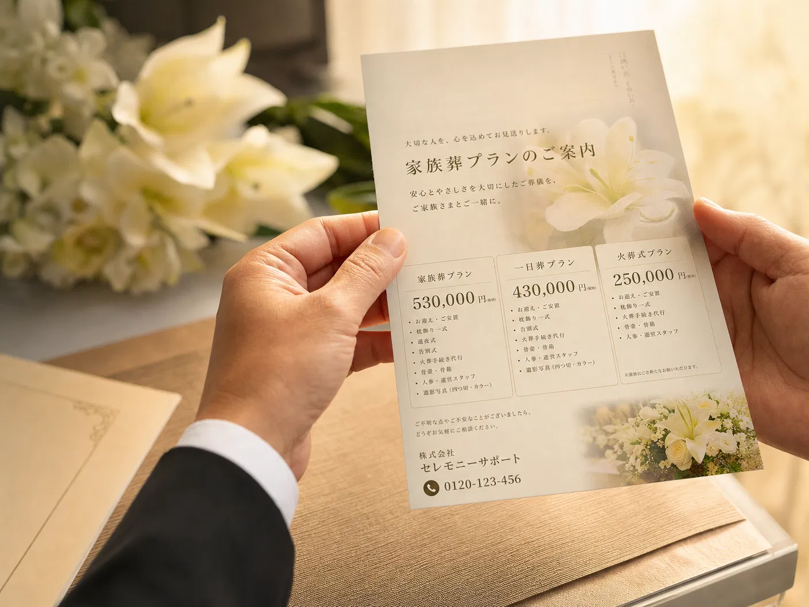
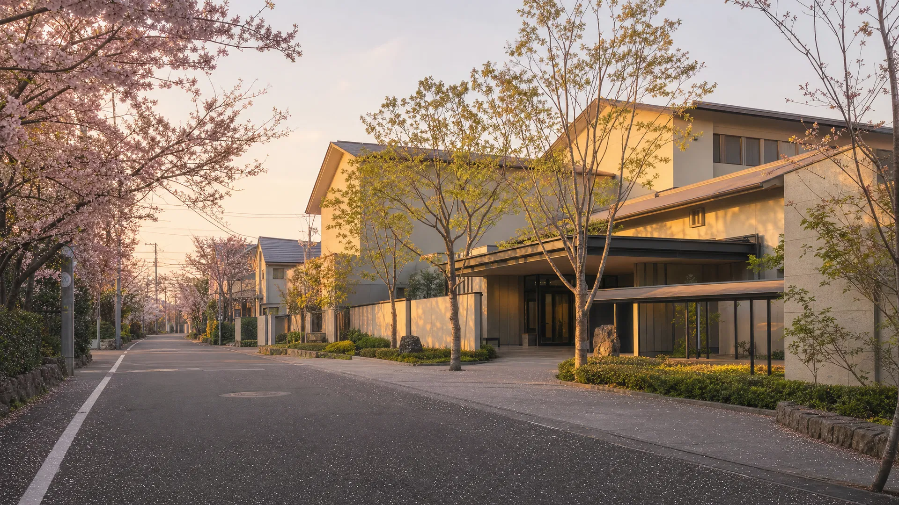

壱
自社生花部による、花祭壇の品質と価格
多くの葬儀社が花の手配を外部に委託する中、当社は自社の生花部で仕入れ・制作を行います。中間マージンを乗せずに、新鮮で品質の高いお花を、ご家族の予算に合わせてご用意できます。
自社生花だから、お花までしっかりと。
堀ノ内斎場に詳しい担当者が、24時間365日、お電話でご案内します。
「いま何をすればいいか」が、最初の一本でわかるように。
※ 表示価格は税込です。火葬料・安置延長費・返礼品などは別途。詳しくは「料金プラン」セクションでご確認いただけます。

病院から「すぐにお迎えを呼んでください」と言われ、慌ててインターネットで葬儀社を探す——杉並区でも、毎月多くのご家族がそうした状況に置かれています。
料金、式場、手続き、参列のお声がけ。決めなければいけないことが一度にやってきます。けれど、悲しみの中にいるご家族にとって、何より必要なのは「今この瞬間、何をすべきか」を落ち着いて整理してくれる相手のはずです。
むさしの葬祭は、お電話の最初の一分で「いま必要なことは何か」を一緒に整理することから始めます。料金の説明より、まず深呼吸を一つ。
価格の安さだけではなく、お花の品質・地域への精通・お電話の対応まで。
ご家族の「安心」を、四つの軸でお約束します。
多くの葬儀社が花の手配を外部に委託する中、当社は自社の生花部で仕入れ・制作を行います。中間マージンを乗せずに、新鮮で品質の高いお花を、ご家族の予算に合わせてご用意できます。
自社の式場を持たないことで、その維持費をプラン価格に乗せる必要がありません。浮いたコストをお花や運営の質にあてる「持たない経営」で、ご家族にとって本当に必要なものだけを丁寧に。
杉並区民の方は堀ノ内斎場の火葬料金が減免されることなど、地域の制度や式場の段取りを熟知したスタッフが、慣れた手順でご案内します。区への葬祭費申請のサポートまで一貫して。
お電話には、葬儀の現場を知るスタッフが直接お出しします。事務的な聞き取りではなく、ご家族の状況に合わせて「いま何をすべきか」を具体的にお伝えします。
一般的に葬儀の花は外部の生花店に発注され、中間マージンが乗ります。当社は自社の生花部が直接仕入れと制作を担うため、新鮮さと価格の両方を維持できます。「最後に、花でしっかり送りたい」というご希望に、品質と料金の両面でお応えします。
「あとから追加でいくら？」その不安を作らないために、
含まれるもの・含まれないもの・追加が出る条件を、ご契約前にすべて文書でお出しします。
儀式にこだわらず、近しい方だけで送りたい方
通夜・告別式を省き、火葬のみを心を込めて執り行います。
参列される方の負担を抑えたい方
通夜式を省き、告別式のみを1日で執り行います。
ご家族・近親者でゆっくりお別れしたい方
通夜・告別式を、ご家族の時間として2日間でゆっくり執り行います。
当日になって「聞いていなかった請求」が出ないよう、契約前に書面でお出しします。
※ 杉並区民の方は、堀ノ内斎場をご利用の場合、火葬料金が減免される対象となります。
※ 杉並区国民健康保険・後期高齢者医療制度に加入されていた方が亡くなられた場合、葬祭費（7万円）の支給を受けられる場合があります（資格条件があります）。お電話の際にご状況をお聞かせください。

堀ノ内斎場は杉並区民の方が利用する代表的な火葬場です。控室の場所、駐車場の動線、火葬時間の組み方など、現場を熟知したスタッフが、ご家族にとって最も負担の少ない段取りでご案内します。
「次に何をすればいいか」を、ご家族の歩幅に合わせてご案内します。
病院・ご自宅・施設、どちらからでも。0120-124-634へお電話ください。担当者が落ち着いてご対応します。
杉並区内なら最短30分で寝台車にてお迎えに参ります。ご自宅・安置施設、ご希望の場所へご搬送します。
ご安置後、ご家族の落ち着かれたタイミングで葬儀内容のお打合せを行います。お見積もりは事前にすべて文書でご提示します。
堀ノ内斎場をはじめ、ご希望の式場で執り行います。当日は専任スタッフが最後まで付き添います。
杉並区への葬祭費申請（対象の方）、相続・遺品整理・各種手続きまで、お電話一本でご相談いただけます。
深夜の病院からの電話で、何から手をつけていいかわからなかったのですが、担当の方が「まず深呼吸してください」と言ってくださり、本当に救われました。お花も母の好きだった白百合をふんだんに使っていただき、母らしいお見送りができました。
他社さんは『一式◯◯円』としか書かれておらず不安だったのですが、こちらは含まれるもの・含まれないものを最初に紙で出していただきました。当日も追加請求は一切なく、安心して父を送ることができました。
堀ノ内斎場のことを何も知らなかったのですが、控室の場所から駐車場のことまで丁寧に教えていただきました。当日も慣れていらっしゃる動きで、参列者にも『よくしてもらった』と言われました。
※ プライバシー保護のため、家名はイニシャルで掲載しています。お声はご家族の許可を得て掲載しております。
深夜・早朝、病院から急かされて、何から始めていいかわからないとき。
まずはお電話ください。スタッフが落ち着いて、ご状況をお聞きします。